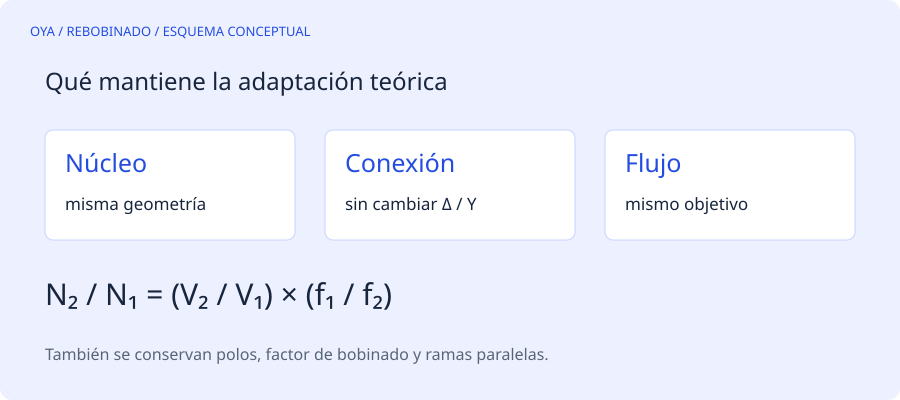

Una adaptación no es un diseño desde cero
Si el motor original tiene datos fiables y se mantienen núcleo, polos, conexión, distribución y caminos paralelos, puede estimarse un nuevo número de espiras mediante la relación tensión-frecuencia. La base es la ecuación de fuerza electromotriz: E ≈ 4,44·f·N·Φ·kw.
Al conservar flujo Φ y factor de bobinado kw, el número de espiras varía como V/f. En esta web la herramienta utiliza tensiones de línea únicamente porque exige mantener la misma conexión entre el caso original y el propuesto. Si la conexión cambia, debe analizarse primero la tensión de fase.
Ejemplo con la misma frecuencia
Una bobina de 80 espiras para un caso original de 220 V se adapta teóricamente a 230 V, manteniendo 60 Hz y el resto de condiciones. El resultado es 80·230/220 = 83,64 espiras. Redondear a 84 modifica ligeramente el flujo respecto al objetivo. La herramienta muestra ese efecto del redondeo para que no quede escondido.
No se deben elegir 84 espiras solo porque el número aparezca en pantalla. Hay que comprobar el registro original, la ocupación de ranura, las cabezas, el conductor, la corriente y el comportamiento térmico del motor.
Ejemplo cuando cambia la frecuencia
Para 80 espiras, 230 V y 50 Hz, pasar a 230 V y 60 Hz da 80·50/60 = 66,67 espiras bajo la hipótesis de flujo constante. Eso no significa que el motor vaya a entregar automáticamente su potencia nominal con la nueva velocidad. La carga mecánica y los límites del conjunto siguen siendo determinantes.
Por qué no se calcula un alambre obligatorio
Una regla adicional frecuente conserva aproximadamente el producto espiras por sección para ocupar un volumen de cobre parecido. Sin embargo, espacio semejante no demuestra capacidad de corriente adecuada. Si cambian frecuencia, potencia, refrigeración o reparto entre ramas, la sección necesaria puede ser diferente.
Por ese motivo, esta calculadora no presenta un calibre de alambre como recomendación automática. La equivalencia de hilos se encuentra en otra herramienta y responde solamente una pregunta geométrica. Separar ambos cálculos evita que una hipótesis de llenado se confunda con una comprobación térmica.
Casos que quedan fuera
No se aplica directamente a motores de imanes permanentes, diseños de polos conmutables, devanados fraccionarios no identificados, cambios de estrella a triángulo o modificaciones del número de ramas. Tampoco recupera un diseño original si se desconoce cuántas espiras tenía realmente.
La salida sirve para preparar una comparación técnica con datos documentados. No ofrece un plano de bobinado ni una secuencia de conexiones. Cuando faltan datos, es mejor marcar la reparación como pendiente de identificación que completar las casillas con supuestos aparentemente precisos.
Fuentes y alcance
Referencia de consulta: EASA/AEMT: conservación del diseño en una reparación. Los ejemplos numéricos son educativos y no describen un trabajo realizado.